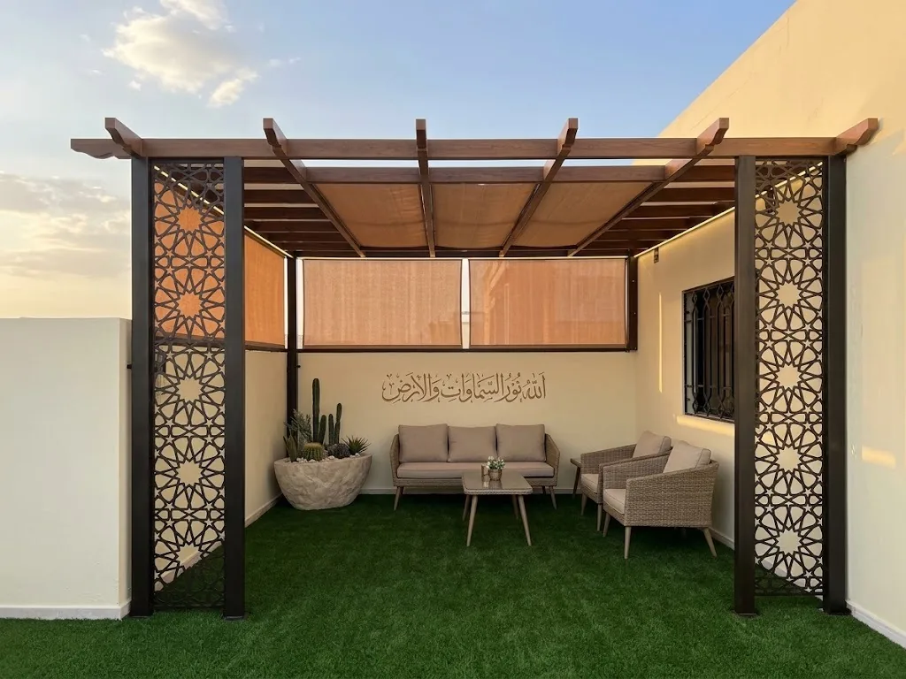
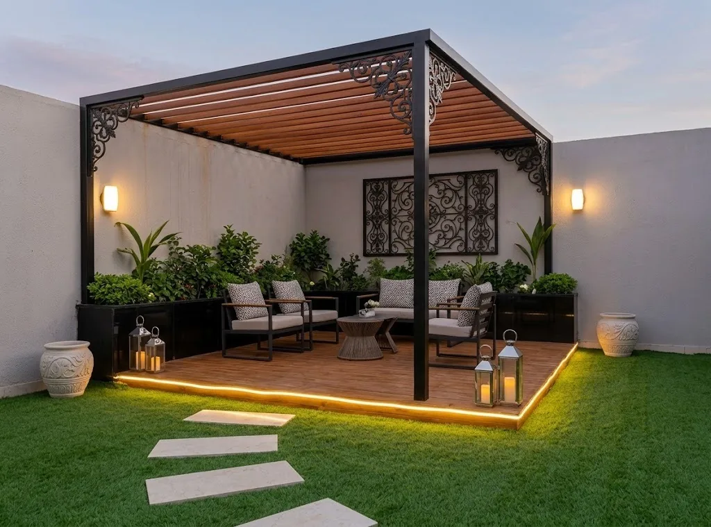
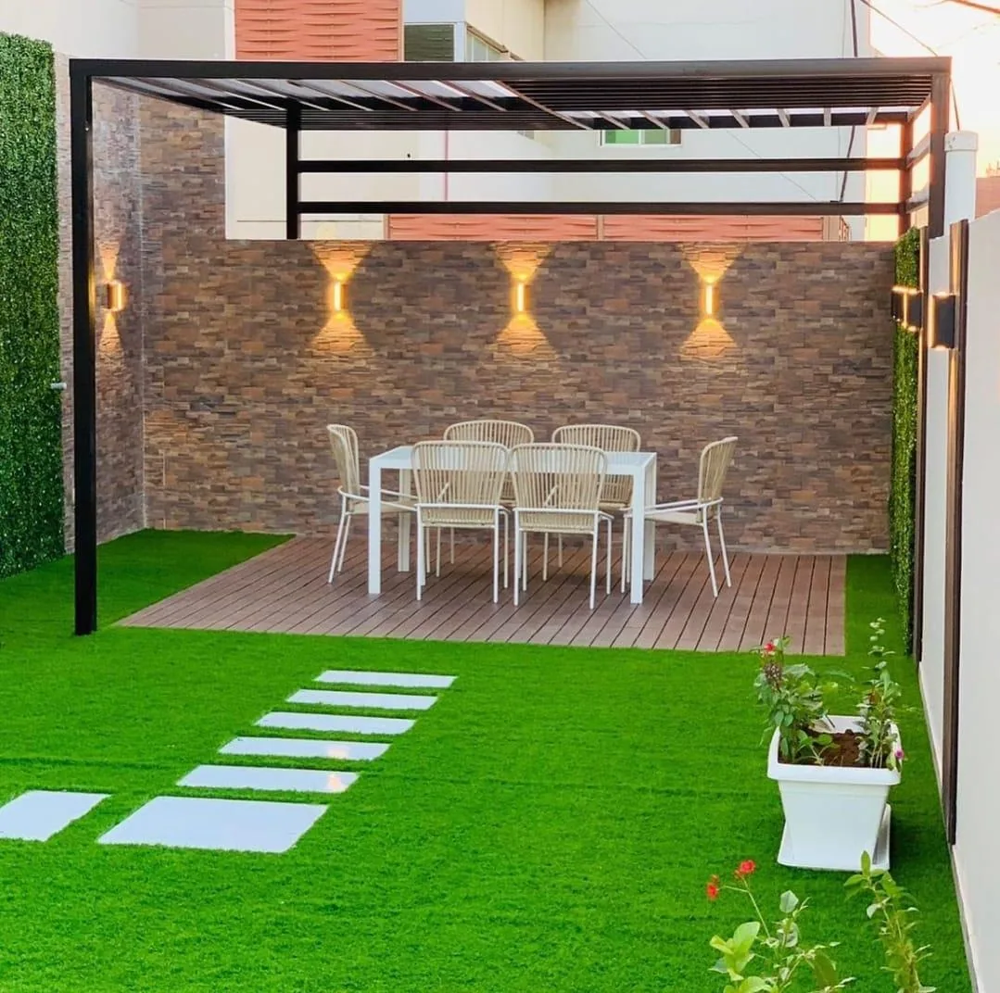
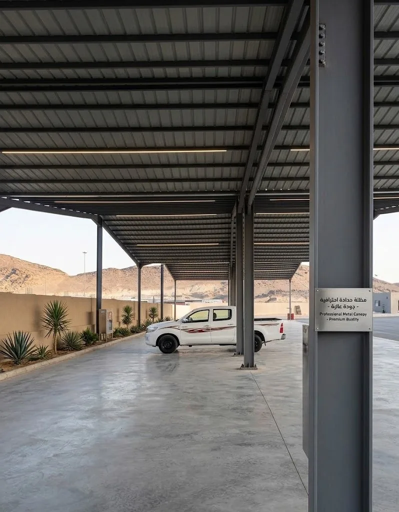
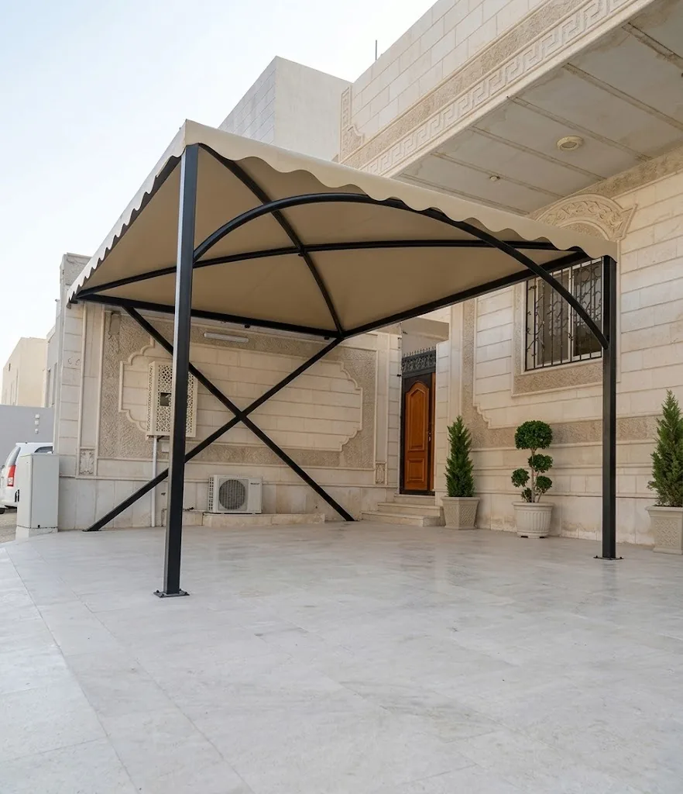
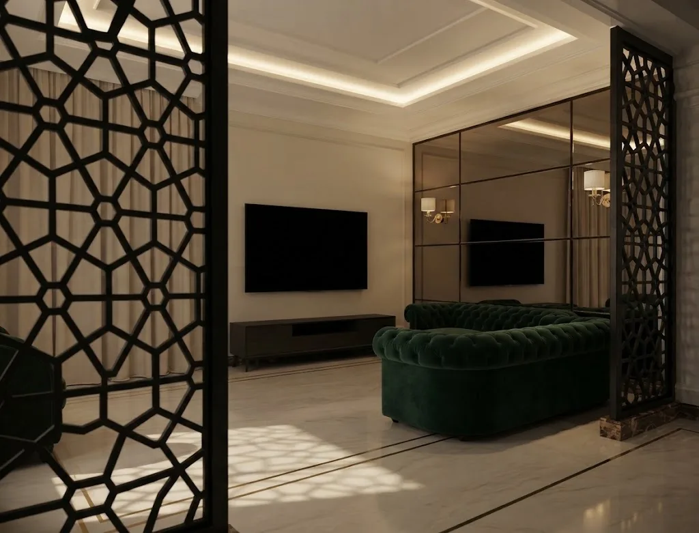

صور ووصف أولي
نراجع نوع القطعة والاستخدام والموقع والمقاسات المتاحة.
فهم الطلب أولًا
تختلف البرجولة عن المظلة في الغرض ودرجة التغطية، لكنهما تشتركان في ضرورة فهم المساحة وحركة المستخدمين ومواقع الأعمدة. نراجع الاستخدام المطلوب قبل مناقشة شكل الهيكل.
من الفكرة إلى التثبيت
نراجع نوع القطعة والاستخدام والموقع والمقاسات المتاحة.
تُحدد الحاجة إلى زيارة الموقع ونقاط القياس والتثبيت.
يبدأ التصنيع بعد الاتفاق على التفاصيل ثم يُنسق التركيب.
من أعمالنا
صور من أعمال نفذها الوليد للحدادة والديكور، مرتبة حسب نوع العمل. يمكنك الاستعانة بها لتوضيح التصميم الذي يناسب طلبك، ثم نراجع المقاسات والتفاصيل الخاصة بموقعك.





معلومات عملية
تعتمد التفاصيل النهائية على المقاس والموقع والاستخدام، لذلك تفيد الصور والقياسات الأولية عند التواصل.
للتعرف على نطاق العمل وطريقة تجهيز طلبك، راجع خدمة حداد مكة من الوليد، ثم اختر الخدمة المناسبة للمقاسات والاستخدام.
أرسل صور المكان والمقاسات المتوفرة وموقع العمل داخل مكة، وسنراجع المعلومات قبل توضيح الخطوة التالية.
